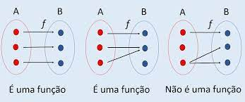

As dificuldades foram.
A dificuldade foi como calcular pois existem só dois números, que são o 0 e o 1.
Para compreender pedi ajuda há professora, e também assisti videos para completar o compreendimento
Agora terá a explicação de como realizar as contas.
| Soma |
0+0= |
0 |
1+ 0 = |
1 |
0+ 1 = |
1 |
1+1= |
10 |
1+1+1= |
11 |
Explicanção de soma
1 + 1 = 10 → fica o “0” e o “1” é transportado para a próxima casa
1 + 1 + 1 = 11 → fica o “1” e o outro “1” é transportado
A divisão de binários seguem as mesmas regras usadas nos decimais
| Subtração |
0-0= |
0 |
1- 0 = |
1 |
1-1= |
0 |
0-1= |
1 |
Explicanção de subtração
0 – 1 = 1 Nesse caso, devemos “pedir emprestado”, daí fica 10 – 1 = 1
As dificuldades foram.
A dificuldade foi na questão de compreender como funciona os conjuntos, o que era e o que não era conjunto.
Para compreender reli os slides, e também assisti há videos para entender o que não havia compreendido.
Agora terá a explicação do que é uma função por meio de conjunto.
As funções também podem ser representados nos conjuntos.
O que um conjunto precisa ter para ser uma função é:
Todos os elementos de A tenque ter correspondencia em B (Não sobrar elementos em A).
A cada elemento que está em A corresponde há um elemento B (de cada elemento A sai apenas uma ligação).
